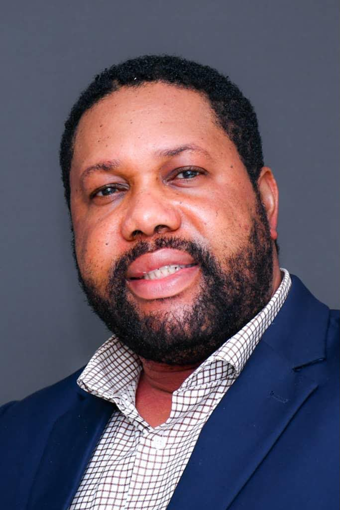
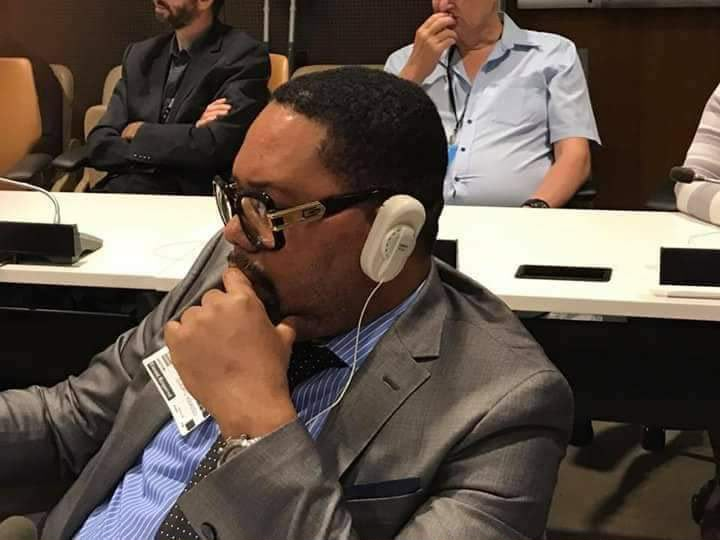
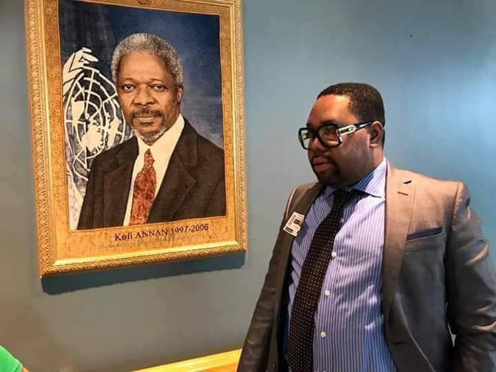
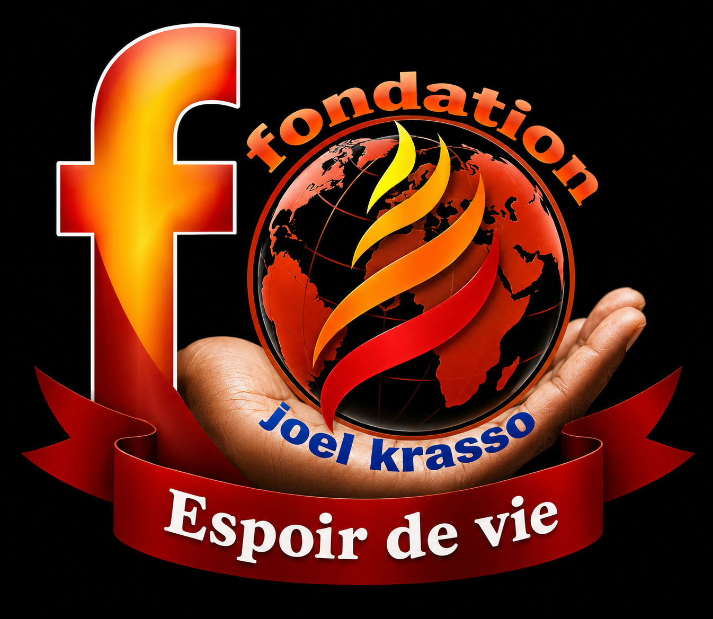

Vision
Voir plus loin et ouvrir de nouvelles perspectives.
 Groupe Baruck
Groupe Baruck

Direction du Groupe Baruck
Une vision entrepreneuriale au service du développement et de l’impact.
Photos d’ambiance · Unsplash
01Notre identité
Le Groupe Baruck développe des activités complémentaires dans l’hôtellerie, la restauration, l’agro-business, la mobilité, la communication digitale et les industries créatives.
Présent en Guinée, au Sénégal et en Côte d’Ivoire, le Groupe porte une ambition régionale : construire des projets solides, modernes et créateurs de valeur, avec une même exigence — transformer une vision en impact concret.
Guinée ◆ Sénégal ◆ Côte d’Ivoire
Voir plus loin et ouvrir de nouvelles perspectives.
Placer la qualité au centre de chaque initiative.
Créer une valeur durable pour la société.
02Neuf expertises, une vision
Des domaines complémentaires réunis autour de l’hospitalité, de la création, de la production et du développement.


03Leadership & vision
À la tête du Groupe Baruck, MR Djoro Joël Shaloom Krasso porte une vision fondée sur l’entrepreneuriat, la création de valeur et l’engagement au service de la société.
PDG du Groupe Baruck
Président de la JECA
Président de l’ONG Espoir de Vie
Expérience dans la protection de l’enfant au sein de l’ONU en 2016
« Construire, entreprendre et créer un impact durable. »
Formulation éditoriale provisoire
04Entités & engagements
Trois expressions d’une même volonté : entreprendre, fédérer et contribuer positivement à la société.
Le pôle économique et entrepreneurial regroupant les différentes activités du groupe.
↗
Une initiative consacrée à l’entrepreneuriat chrétien africain et à la mise en réseau des jeunes entrepreneurs.
↗
Un engagement social orienté vers l’accompagnement, l’espoir et l’amélioration des conditions de vie.
↗Les missions exactes de la JECA et d’Espoir de Vie seront précisées après validation.
05Projets & Réalisations
Cette structure accueillera bientôt les projets, productions et collaborations du Groupe Baruck.
Projet à venir
Projet à venir
Une ambition en commun ?
Pour une collaboration, un partenariat ou plus d’informations sur nos activités, échangeons.
06Contact
Notre équipe est à votre écoute pour répondre à vos questions et étudier vos propositions.